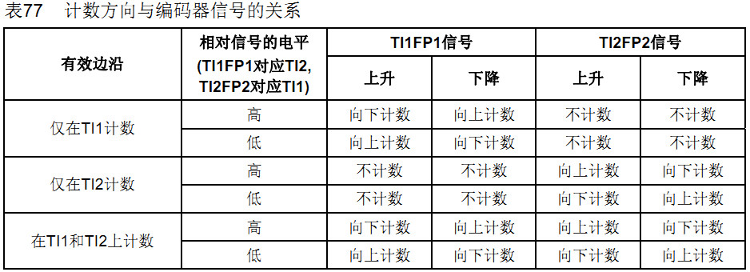
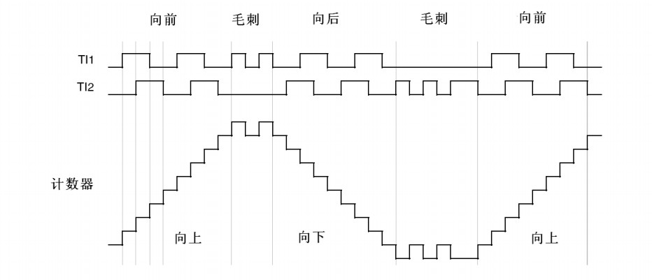

这是一篇旧文，早在上大二的时候，在地下室（当时实验室在防空地下室）顺手在word上写的，当时STM32正刚刚开始蓬勃发展，如今时隔3年，整理到这里！
外部编码器为定时器提供带有方向的时钟，如下图1右上角。通用定时器总共四种时钟提供方式，现在使用的即是TI1F和TI2F的组合时钟方式。
img1
TI1、TI2作为编码器输入口，通过配置在TI1和TI2边沿的计数位置实现所谓的倍频特性，通过向上向下计数实现鉴相，若向上计数往前走，则向下计数则是往后退的过程。由图2和图3知，控制计数点的不同，只能0/2/4倍频。
 
/******************************************************************************
使用到变量定义
******************************************************************************/
#define PULSE_PER_CIRCLE 600 //编码器分辨率，即转一圈脉冲数
#define MAX_COUNT 800 //最大计数值，解决计数问题时要用
#define ENCODER_TIM_PERIOD (PULSE_PER_CIRCLE * 4 - 1) //定时器周期
SINT32 encoder_last = 0; //记录上一次采集编码器数值
SINT32 encoder_cnt = 0; //编码器采集值
/******************************************************************************
TIM3定时器配置为编码器模式
******************************************************************************/
void EncodeInit(void)
{
GPIO_InitTypeDef GPIO_InitStructure;
TIM_TimeBaseInitTypeDef TIM3_TimeBaseStructure;
TIM_ICInitTypeDef TIM3_ICInitStructure;
/*TIM2 Clock enable*/
RCC_APB1PeriphClockCmd(RCC_APB1Periph_TIM3, ENABLE);
RCC_APB2PeriphClockCmd(RCC_APB2Periph_GPIOA, ENABLE);
/*Configure PA6,7*/
GPIO_InitStructure.GPIO_Pin = GPIO_Pin_6 | GPIO_Pin_7;
GPIO_InitStructure.GPIO_Mode = GPIO_Mode_IN_FLOATING;
GPIO_InitStructure.GPIO_Speed = GPIO_Speed_50MHz;
GPIO_Init(GPIOA, &GPIO_InitStructure);
/*COnfigure TIM3*/
TIM3_TimeBaseStructure.TIM_Prescaler = 0; //TIM clock = 72MHz
TIM3_TimeBaseStructure.TIM_CounterMode = TIM_CounterMode_Up;
TIM3_TimeBaseStructure.TIM_Period = ENCODER_TIM_PERIOD;
TIM3_TimeBaseStructure.TIM_ClockDivision = TIM_CKD_DIV1;
TIM3_TimeBaseStructure.TIM_RepetitionCounter = 0;
TIM_TimeBaseInit(TIM3, &TIM3_TimeBaseStructure);
TIM_EncoderInterfaceConfig(TIM3, TIM_EncoderMode_TI12, TIM_ICPolarity_Rising,
TIM_ICPolarity_Rising); //配置编码器模式，4倍频
TIM_ICStructInit(&TIM3_ICInitStructure);
TIM3_ICInitStructure.TIM_ICFilter = 6;
TIM_ICInit(TIM3, &TIM3_ICInitStructure);
/*Reset counter*/
TIM3->CNT = 0;
TIM_Cmd(TIM3, ENABLE);
}到此，编码器初始化就已经配置好了，按理应该接上就能用了。但是，STM32定时器是16位，假如计数值超过65535，数据会丢失。因此，参考了
/*****************************************************************************/
Function Name: ENC_Get_Electrical_Angle
Author : 夏侯佐鑫
Date : 2011-10-22
******************************************************************************/
SINT16 ENC_Get_Electrical_Angle(void)
{
static UINT16 lastCount = 0;
UINT16 curCount = TIM3->CNT;
SINT32 dAngle = curCount - lastCount;
if(dAngle >= MAX_COUNT)
{
dAngle -= ENCODER_TIM_PERIOD;
}
else if(dAngle < -MAX_COUNT)
{
dAngle += ENCODER_TIM_PERIOD;
}
lastCount = curCount;
return (SINT16)dAngle;
}在SysTick中采集数值，SysTick配置为SysTick_Config(720000)即10ms。SysTick中断函数如下：
/******************************************************************************
Function Name: SysTick_Handler
Author : 夏侯佐鑫
Date : 2011-04-22
******************************************************************************/
void SysTick_Handler(void)
{
/*Encoder*/
encoder_last = encoder_cnt;
encoder_cnt = encoder_cnt + ENC_Get_Electrical_Angle();
}到此，编码器记里程功能完美实现。此实现代码用于2012年全国电脑鼠走迷宫大赛的电脑鼠制作中。